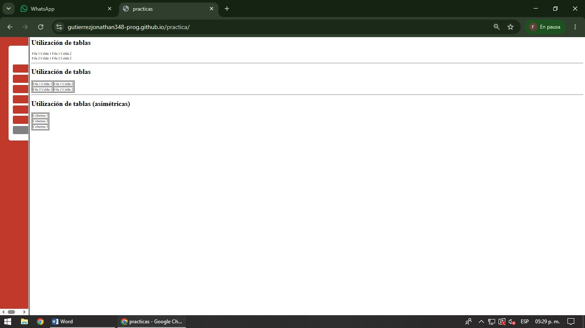

En esta práctica se aprende a crear tablas utilizando HTML para organizar información en filas y columnas. La estructura principal se crea mediante la etiqueta table, la cual contiene toda la información de la tabla. Las filas se generan utilizando la etiqueta tr, mientras que las celdas donde se almacena la información se crean mediante la etiqueta td. También se puede utilizar la etiqueta th para crear encabezados dentro de las tablas. Se emplean atributos como border para agregar bordes y mejorar la visualización de los datos. Además, se muestran ejemplos de tablas simples y tablas asimétricas que permiten organizar la información de distintas maneras. El objetivo de esta práctica es comprender cómo presentar datos de forma ordenada y facilitar su lectura mediante el uso de tablas.